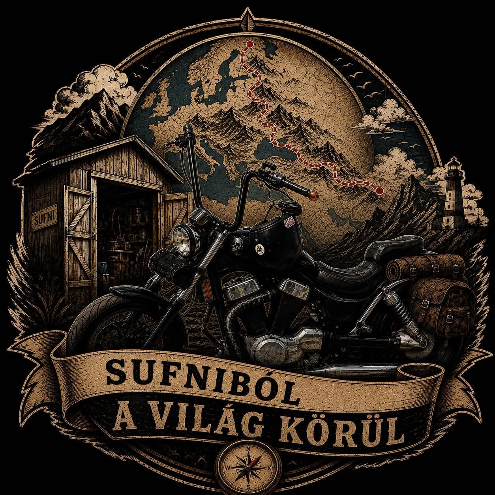

Videós beszámoló
Elkészült a blokk! – Első indítás a sufniban
Hosszú hetek munkája, rengeteg takarítás és alkatrész-vadászat után elérkezett a pillanat: vajon beindul a gép? Nézzétek meg a videót a részletekért!
Skacok, a kocsma ajtaja már zárva, de a Sufni kapuja most nyílik ki! 🛠️🏍️ Sokan emlékeztek még a régi motoros estékre a Pokol Bárban, a nagy beszélgetésekre és a benzingőzre. A pult mögül most átköltöztem a szerelőasztal mellé. Van egy őrült tervem: Van egy 1992-es, négysebességes Suzuki VS 1400 Intruderem. Az utolsó csavarig szétkapom itt a sufniban, teljesen újjáépítem, majd elindulok vele egy 20 000 kilométeres, egész Európát és a Kaukázust átívelő brutális túrára. Nordkapp, Grossglockner, Transzfogaras, Albánia stb.... Ez az oldal mostantól a Sufniból a világ körül projekt otthona. Itt fogom mutatni fotókkal, és hamarosan YouTube videókkal is a szerelést, a cumizást a csavarokkal, majd a kilométerek falását. Maradjatok velünk, mert pár héten belül lehull a lepel az első videóról, és indul a mandula! Ki tart velem?
Legutóbbi videónk
Hosszú hetek munkája, rengeteg takarítás és alkatrész-vadászat után elérkezett a pillanat: vajon beindul a gép? Nézzétek meg a videót a részletekért!